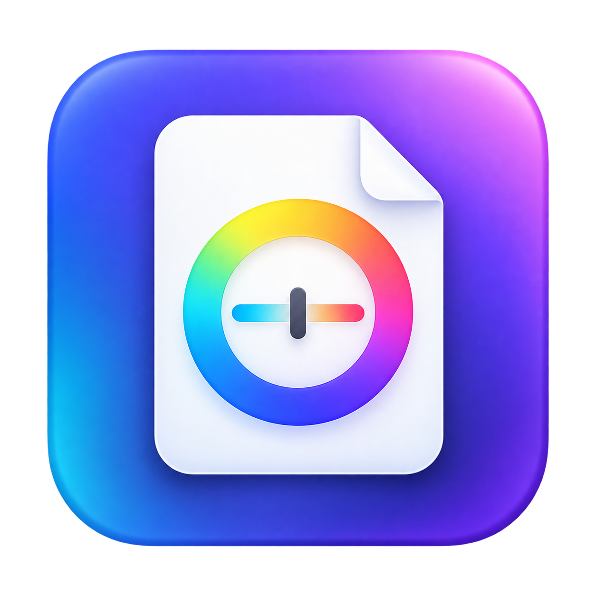
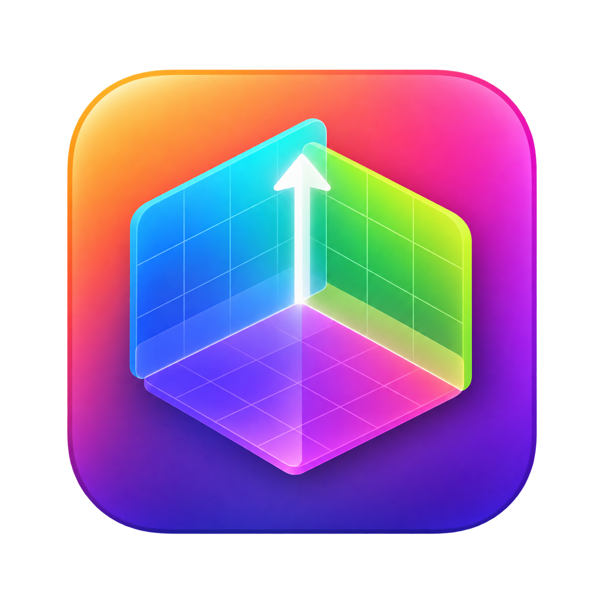
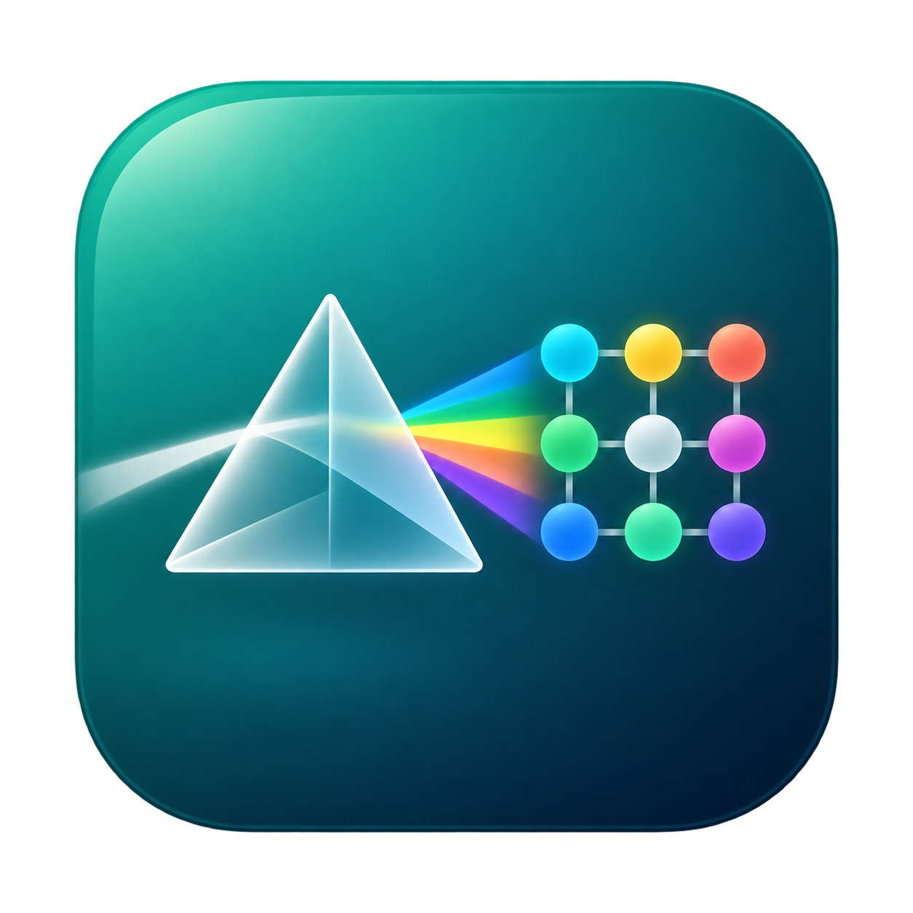

工作流选择
显示器检测
sRGB/DCI-P3/Rec.2020 色域分析

ICC 校准
显示器 ICC Profile 制作

3D LUT
Resolve/madVR LUT 制作

CCMX 矩阵
色度计光谱校正制作
验证
校准效果验证报告
历史报告
测量历史数据管理
测量模式
色块预览
RGB(0, 0, 0)历史数据
探头: --
显示器: --
时间: --
数据: --
测量结果
显示器基础数据
峰值亮度
-- cd/m²
黑场亮度
-- cd/m²
对比度
--
Gamma
--
白点色温
-- K
白点x
--
白点y
--
白点偏差
-- ΔE
色域覆盖
sRGB--%
DCI-P3--%
AdobeRGB--%
Rec.2020--%
当前色块数据
--
RGB(--, --, --)
x, y
--, --
Y
-- cd/m²
色温
-- K
ΔE
--
u'v'
--, --
步骤详情
环境预检
尚未开始预检CIE 1931 色度图
基础色域
宽色域
专业电影
品牌色域
Gamma 曲线
标准Gamma
复合曲线
HDR曲线
Log曲线
线性
饱和度追踪
切换到「饱和度/色相扫描」模式测量后显示
色温 (CCT) 追踪
灰阶测量后显示色温/Δuv 追踪曲线